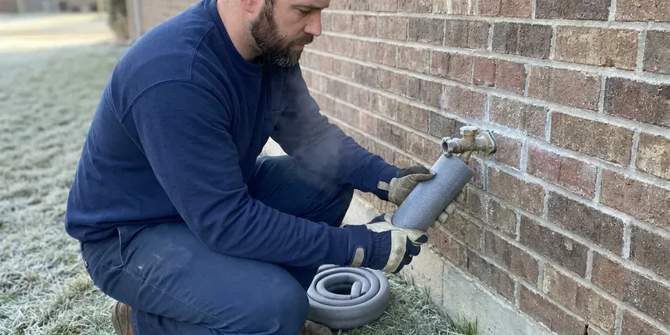

Leak Detection in Douglas, WY
Water bill doubled in Douglas, WY? JKV Plumbing finds where the water is going, usually in one visit.
- Photo Report Included
- Price Before We Start
- Smaller Repair Holes
- Licensed and Insured

Catch the Leak Before It Ruins the Floor in Douglas, WY
We mark the exact spot so the repair opening stays small.
Hidden Leak Locating in Douglas, WY
JKV Plumbing serves Douglas homeowners who know something is leaking but cannot see where. Ground movement and temperature swings stress buried pipe, and the leak often shows up first on the water bill as a jump nobody can explain. Our job is the source. You choose the repair after that.
Some of what we do:
- Ground microphones on service lines
- Pinhole leaks behind walls
- Ceiling and wall thermal scans

Additional Plumbing Maintenance Services in Douglas, WY
Our maintenance and specialty plumbing services in Douglas, WY protect your home year-round and extend the life of every system.


Customers
Why Choose JKV Plumbing for Leak Detection in Douglas, WY?
A slow leak under a slab can wash out the soil beneath the concrete for months before a crack shows in the tile or the baseboard pulls away. Early finds cost less. The meter test comes first, then work toward the exact spot with acoustic and thermal gear.
- Cross-Checked Results, Acoustic readings get backed by a thermal scan before we mark the spot.
- Mold Prevention, Water left in a wall cavity grows mold, so we find it before that starts.
- Small Openings, Exact locating means a smaller repair hole and lower patch costs.
Citywide Coverage
No matter where you live in Douglas, we bring the same equipment: ground microphones, thermal cameras, line tracers and tracer gas. Rural lots are no problem. We have traced service lines hundreds of feet from the meter to the house.
Experienced Team
Our leak detection techs train each year on the newest acoustic and thermal gear, since reading a ground microphone well takes real practice. Listening is a skill. They know how Wyoming homes are typically plumbed.
Safety-First Approach
We call 811 before excavating any outdoor leak, which gets buried utilities marked first. That prevents accidents. Repairs are pressure tested before we backfill or close up a wall.
Trusted Certified Douglas Plumbing Services Professionals
At JKV Plumbing, we are proud to offer certified plumbing services throughout Douglas, WY. Those papers on the wall mean something. Every repair, install and maintenance visit follows strict safety and quality rules, and the plumbers doing the work carry recognized industry credentials.
Call Us Now PHCC Plumbing Contractor Recognition
PHCC Plumbing Contractor Recognition Better Business Bureau (BBB) Accreditation
Better Business Bureau (BBB) Accreditation Angi Certified Pro
Angi Certified Pro ISO 9001 Quality Management Certification
ISO 9001 Quality Management CertificationSlabs, Walls and Yards: Leak Detection in Douglas, WY
Emergency Leak Detection in Douglas, WY
Water coming through a ceiling at night does not wait for an appointment. Shut the main. We respond to Douglas, WY emergencies with full detection gear, find which line let go, and isolate it so you can get water back on the rest of the house while the permanent repair gets scheduled.

Slab Leak Detection in Douglas
Concrete slab homes have supply lines buried in sand below the floor, and a pinhole there can run for months before anyone notices. Look for warm tile first. We pressure test the hot and cold sides separately, then use a ground microphone to hear the leak through the concrete and confirm with a thermal camera when the leak is on the hot side.
Main Water Line Leak Detection in Douglas
A soft wet patch near the sidewalk or a sinking spot over the line can mean the service pipe is leaking. Old galvanized and copper lines fail most. We map the pipe with a line tracer and listen for the leak with a ground microphone, which keeps the dig to a single hole rather than a trench. Then we patch or replace.
Water Line Leak Detection in Douglas, WY
Supply leaks hide inside walls, above ceilings and under yards. Your water bill is usually the first warning. We read the meter, close fixture stops one at a time and check framing with a moisture meter, then confirm with acoustic gear on pressurized lines, which keeps the drywall cut small in your Douglas home.
Leak Detection Price Ranges in Douglas, WY
Standard home leak detection usually costs $150 to $450. Pool leak detection runs about $250 to $500. Repairs vary a lot, anywhere from $150 for a toilet or faucet to several thousand for rerouting a slab line overhead, and accurate locating is what keeps that number low.
Irrigation Leak Detection in Douglas, WY
Sprinkler laterals crack and zone valves stick open, and either can lose thousands of gallons before the bill shows it. Check the yard first. Our tech tests the irrigation system separately from the house, runs each zone and traces buried lines, because many water providers say to rule out irrigation first when a summer bill jumps.
Gas Leak Detection in Douglas
A faint rotten-egg odor by the furnace or stove needs a professional check. Leave the house if the odor is strong. Our licensed plumbers use a combustible gas detector and soap solution on fittings, appliance connectors and the meter riser, then pressure test the line to find a leak too small to smell, and we repair it to the fuel gas code before turning service back on.

Hidden Wall and Ceiling Leaks in Douglas
Bubbling paint, soft drywall and a musty smell come up on most of our calls. All of them mean water. A thermal scan shows the wet patch, and a moisture meter confirms it. Acoustic tools help when the leak is on a pressurized line, and once the source is pinned down we cut a single neat access opening instead of chasing the stain across the wall.
Leak Detection Near Me in Douglas, WY
A fast answer on a suspected leak limits both water loss and damage, since a pinhole that leaks a quart an hour adds up to more than 150 gallons a month. We can usually book a test within a day in Douglas. Bring your last two water bills.
Our techs work all over Douglas, WY, and know which subdivisions have PEX, which older blocks still have galvanized service lines and where the meters usually sit. That local knowledge cuts the search time on most visits.
JKV Plumbing at a Glance
- Fully licensed plumbing team covering Douglas, WY
- Same-day appointments and 24/7 emergency response
- Upfront, flat-rate pricing before work begins
- 4.9-star rated by 782+ Wyoming customers
Douglas Map
Douglas Information
- Population
- 6,449
- Area codes
- Local
- Service area
- Douglas and towns within a 40 mile drive
- Nearby
- Casper, Torrington, Laramie, Gillette
Ground that swells and settles can crack pipe under a slab or along a buried service line, and the first clue is often a water bill that climbs with no change in use. Locating the leak before digging keeps the repair small in Douglas, WY. Basements and crawlspaces are both common in Wyoming homes, and both benefit from protection from freezing and groundwater.
Talk to a Plumber
Call JKV Plumbing for honest, reliable plumbing from people who know the trade in Douglas, WY.
Our Specialized Plumbing Services in Douglas, WY
At JKV Plumbing, you get every kind of plumbing service from one company across Douglas, WY. From leak detection to full system installs, our team works fast and charges fair prices on homes and commercial properties alike. Here are the core services we offer:


From Meter Test to Marked Spot in Douglas, WY
We confirm it, narrow it down and mark it, then give you repair options with prices.
Call and Describe
Call (307) 393-4049 and describe what you are seeing, like a high bill or a damp spot. We book a time at your Douglas property.
Meter and Pressure Tests
We confirm water is escaping at the meter, then isolates each line with a pressure gauge.
Locate and Mark
Acoustic and thermal gear pinpoint the spot, and you see the mark before anything is opened.
Frequently Asked Questions About Leak Detection in Douglas
Expect $250 to $800 for most homes in Douglas. Hard-to-reach leaks cost more. Jobs that need tracer gas or a long service line trace tend to land near the top of that range because they take more time and gear, and we quote before starting.
Coverage depends on your policy. Many cover sudden leaks and sometimes the cost of finding them, especially when the search leads to a covered repair of the pipe. Check with your insurer.
Most homes take between one and three hours. The time depends on where the leak is, how bad it is, how much of the house has to be tested and the type of pipe. Leaks under a slab can run a little longer, since sound travels differently through concrete.
Leave the house and call 911 or the gas utility from outside. After it is cleared, give us a call. We find the leak with a detector and a pressure test, then repair the line to the fuel gas code.
Galvanized steel and polybutylene top the list in older homes, since galvanized corrodes at the threads and polybutylene breaks down from the inside. Copper develops pinholes with age. PVC and PEX hold up better but can still leak at fittings or from installation mistakes.
Acoustic ground microphones, thermal cameras, line tracers, moisture meters and pressure gauges go on the truck for every leak call we run. Each confirms a different kind of leak. Results are more reliable when tools agree.
Many rural homes in Wyoming draw from private wells, and well water can carry sulfate, iron or other minerals that affect taste and fixtures. Aggressive water can cause pinhole corrosion in copper. Shifting soil under slabs puts stress on pipe, and high static pressure adds more strain.
Shut every fixture off and watch the meter. If the dial or the little triangle leak indicator moves at all over ten minutes, water is escaping somewhere in the system. A sudden jump in the bill is another sign.
What Our Customers Say About Our Plumbing Experts

Megan L.
Our upstairs tub drained so slowly that every shower turned into a bath. JKV Plumbing pulled a wad of hair out of the stopper and then snaked the line past the trap. Three months later it still drains fast.
Drain Cleaning · Gillette, WYRachel N.
Hard water was leaving white crust on every faucet and our dishwasher was struggling. The tech tested the water, recommended a softener sized for a family of five, and installed it with a bypass valve in one afternoon. The spots on our glasses are gone.
Water Softener · Torrington, WY
Tyler J.
We bought a taller comfort height toilet for my dad, who just had knee surgery. The plumber pulled the old one, found the flange was cracked, and replaced it before setting the new bowl. Took about two hours.
Toilet Installation · Douglas, WY
Jessica T.
We were adding a gas range in a kitchen remodel and needed a new line run from the meter. The plumber pulled the permit, ran the pipe through the crawl space, and had it inspected and approved within the week.
Gas Line Repair · Rawlins, WY
Kevin O.
Before buying our house I paid for a sewer camera inspection. JKV Plumbing found a belly in the line that held standing water about forty feet from the cleanout. We used the video to get the sellers to fix it before closing.
Sewer Camera Inspection · Rawlins, WY
Patricia H.
We had a slab leak that two other companies could not find. JKV Plumbing located it in under an hour with a listening device. They rerouted the line through the attic instead of breaking up the floor, so we kept our kitchen tile.
Slab Leak Repair · Casper, WY